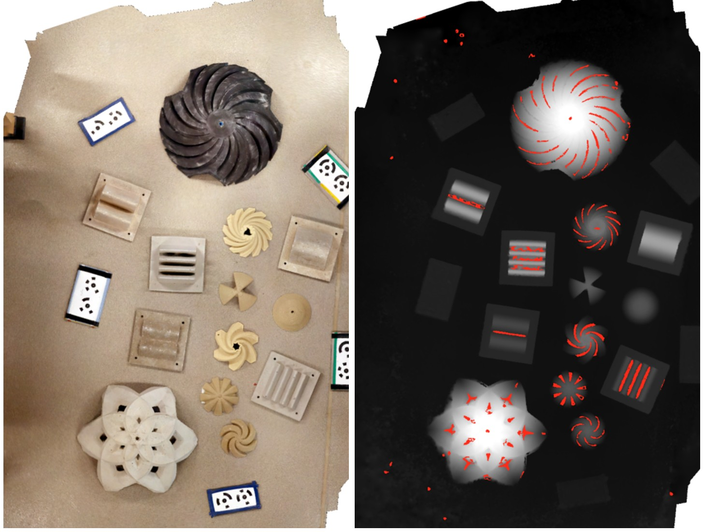
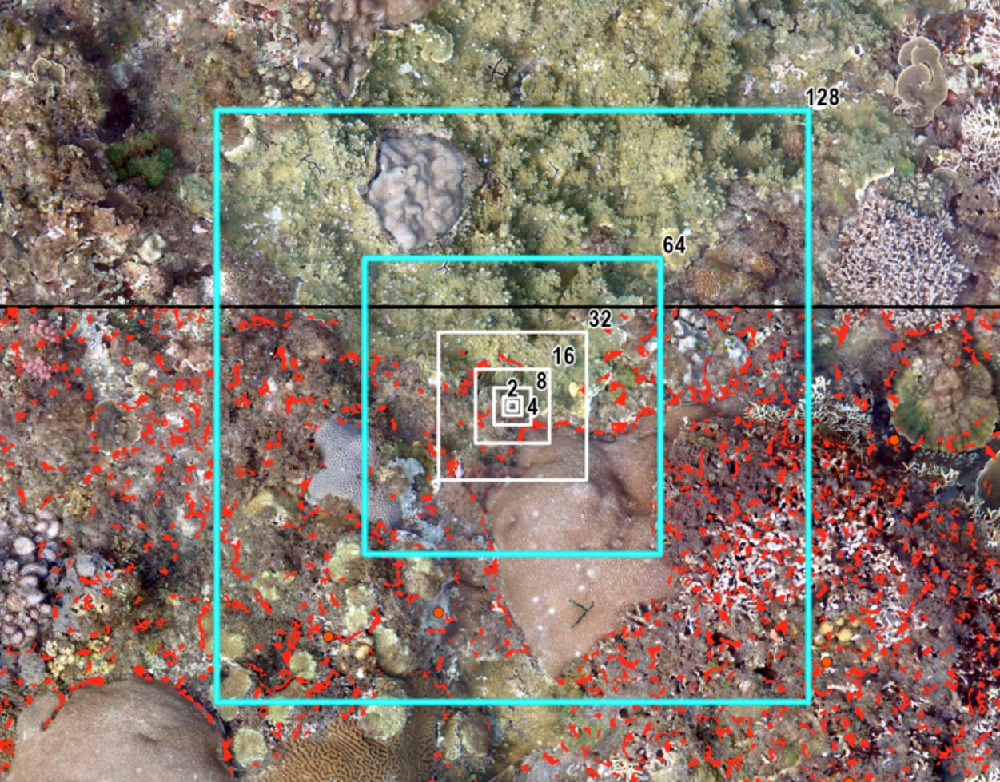

Overview計畫概述
Reef crevices — the cracks, overhangs, and void spaces woven throughout the three-dimensional architecture of coral reefs — are consistently identified as preferential settlement and survival hotspots for invertebrate juveniles. Their rugose surfaces and cryptic interiors offer physical refuge from predation, reduced hydrodynamic stress, and concentrated crustose coralline algae (CCA), a potent chemical settlement cue for coral and invertebrate larvae. Yet the vast majority of experimental evidence linking crevice geometry to juvenile recruitment has come from artificial substrates: settlement plates, grooved tiles, and 3D-printed structural modules deployed in controlled or mesocosm settings. Whether the same geometric principles that drive recruitment on engineered surfaces also govern juvenile distribution across the architecturally complex surface of a natural reef has rarely been tested in the field.
縫隙——散布於珊瑚礁三維架構中的裂縫、懸垂面與空隙——一直被認為是無脊椎動物幼生定著與存活的優先熱點微棲地。其粗糙表面與隱密內部能提供免於捕食的物理庇護、降低水動力壓力，並富集珊瑚及無脊椎動物幼生的重要化學定著誘引物——殼狀珊瑚藻（CCA）。然而，目前將縫隙幾何特徵與幼生補充連結的實驗證據，絕大多數來自人工基質：附著板、溝槽磁磚，以及在受控或中型生態系統環境中部署的 3D 列印結構模組。縫隙幾何原則是否同樣主導自然礁體複雜表面上幼生的分布格局，目前在野外幾乎尚未經過驗證。
This project bridges that gap by deploying high-resolution SfM photogrammetry and GIS spatial analysis to quantify the crevice geometry of natural reef surfaces — capturing metrics such as crevice width, depth, aspect ratio, rugosity index, and fractal dimension — and linking these structural variables to in situ juvenile invertebrate density and post-settlement survival measured through repeated field surveys.
本計畫藉由高解析度 SfM 攝影測量與 GIS 空間分析，量化自然礁體表面的縫隙幾何特徵——包括縫隙寬度、深度、長寬比、粗糙度指數與碎形維度——並透過重複野外調查，將這些結構變量與現地幼生密度及定著後存活率加以連結，以填補此知識缺口。
Background & Motivation研究背景與動機
The recruitment bottleneck — the period immediately following larval settlement, during which mortality is highest — represents one of the most critical and poorly understood phases of coral reef population dynamics. Post-settlement survival is mediated by a constellation of biotic and abiotic factors, but microhabitat geometry has emerged as a particularly powerful determinant. Laboratory and mesocosm experiments have demonstrated that even millimetre-scale crevices can elevate coral spat survivorship dramatically: juveniles on plain flat surfaces frequently suffer 100% mortality within months, while those sheltered in micro-crevices can persist for over a year. Engineering-inspired studies have pushed this further, demonstrating that specifically designed helical recesses on cylindrical restoration modules can achieve juvenile settlement densities 50 to 300 times higher than those recorded on adjacent natural reef surfaces.
幼生補充瓶頸期——幼蟲定著後死亡率最高的時期——是珊瑚礁族群動態中最關鍵且最難以理解的階段之一。定著後存活率受一系列生物與非生物因子共同調控，其中微棲地幾何特徵已成為特別關鍵的決定因子。實驗室與中型生態系統試驗已證明，即使是毫米尺度的縫隙也能大幅提升珊瑚幼體的存活率：在平坦表面上的幼體往往在數月內全數死亡，而受縫隙庇護者可存活超過一年。工程導向的研究更進一步表明，在圓柱形復育模組上設計螺旋狀凹槽，可使幼生定著密度達到鄰近自然礁體表面的 50 至 300 倍。
However, this body of work leaves a fundamental question unanswered: do natural reef crevices — with all their geometric irregularity, biological fouling, and microhabitat diversity — generate the same recruitment-enhancing effect, and if so, which geometric properties drive it? Addressing this question has direct implications not only for understanding reef demography, but also for translating engineering insights from artificial reef design back into a predictive framework for natural reef recovery and restoration target-setting.
然而，這些研究留下了一個根本性的問題尚待解答：自然礁體縫隙——具有各種幾何不規則性、生物附著與微棲地多樣性——是否也能產生相同的補充促進效應？若能，又是哪些幾何特性在驅動此效應？解答這個問題不僅對理解礁體族群動態具有直接意義，也有助於將人工礁體設計的工程洞見轉化回自然礁體恢復的預測框架，並為復育目標的設定提供科學依據。
Research Questions研究問題
- How does natural reef crevice geometry — width, depth, aspect ratio, rugosity, and fractal dimension — vary across reef zones and depth gradients?
自然礁體縫隙的幾何特徵（寬度、深度、長寬比、粗糙度、碎形維度）在不同礁區與深度梯度間如何變化？ - Which crevice geometric metrics are most strongly associated with juvenile invertebrate density and post-settlement survival across natural reef habitats?
在自然礁體棲地中，哪些縫隙幾何指標與無脊椎動物幼生密度及定著後存活率的關聯性最強？ - Does the density–survival relationship in natural reef crevices exhibit the density-dependent dynamics documented on artificial substrates and deployment devices?
自然礁體縫隙中的密度—存活關係是否呈現人工基質與復育裝置上所記錄的密度依賴動態？ - Can 3D-derived crevice geometry metrics predict juvenile recruitment hotspots at the reef scale, enabling spatially targeted reef management?
以 3D 重建所得的縫隙幾何指標，能否在礁體尺度上預測幼生補充熱點，從而支持空間精準的礁體管理？

High-resolution 3D crevice mapping · 高解析度 3D 縫隙測繪

Juvenile invertebrates inside a natural reef crevice · 自然礁體縫隙中的幼生無脊椎動物
Approach研究方法
Natural reef surfaces are reconstructed at centimetre resolution using Structure-from-Motion (SfM) photogrammetry, generating dense 3D point clouds and digital elevation models (DEMs) that capture the full topographic complexity of the reef. From these models, crevice geometry is extracted and quantified using GIS-based spatial analysis: rugosity indices, fractal dimension, surface curvature, vector ruggedness measures, and crevice-specific dimensional metrics (width, depth, and aspect ratio) are computed across spatial scales ranging from millimetres to metres.
自然礁體表面透過運動恢復結構（SfM）攝影測量，以公分級解析度進行三維重建，生成高密度點雲與數值高程模型（DEM），完整捕捉礁體的地形複雜性。再由這些模型出發，運用基於 GIS 的空間分析提取並量化縫隙幾何特徵：在毫米至米的多尺度空間中，計算粗糙度指數、碎形維度、表面曲率、向量粗糙度指標，以及縫隙專屬的尺寸指標（寬度、深度與長寬比）。
These structural metrics are paired with repeated in situ field surveys of juvenile invertebrate density and survivorship conducted at matching spatial scales, enabling multivariate modelling of the relationship between crevice geometry and recruitment outcomes. The approach builds on multi-scale frameworks established in reef morphology research, extending them to the previously uncharacterised crevice microhabitat.
這些結構指標將與在相同空間尺度下重複進行的現地幼生密度及存活率調查數據配對，從而對縫隙幾何特徵與補充結果之間的關係進行多變量建模。本計畫的方法奠基於礁體形態研究中已建立的多尺度框架，並將其延伸至先前尚未被系統性描述的縫隙微棲地。